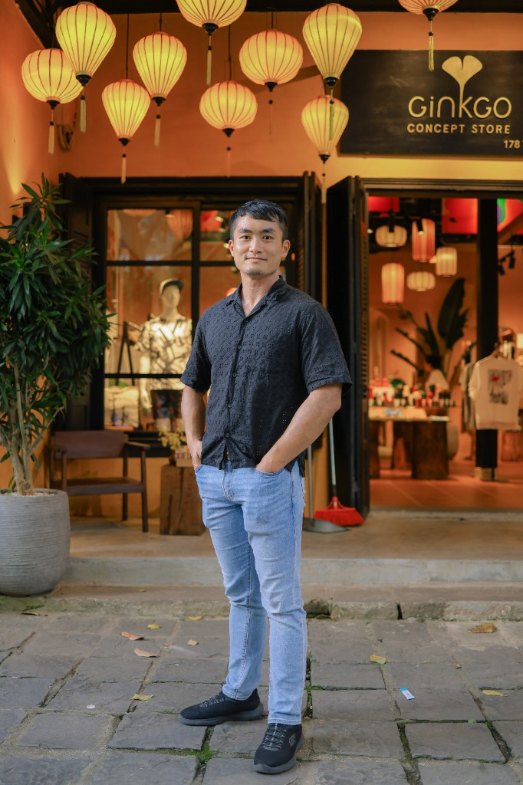
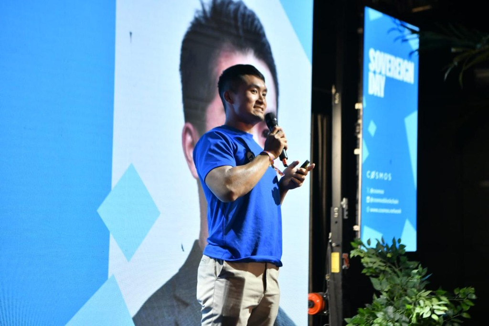

Bridging Japanese and East Asian institutions with global digital assets infrastructure leaders.
Hong Kong roots as an East Asia asset, based in Tokyo. Connecting Japan, Greater China, and Southeast Asia with Western institutional markets, bridging enterprises with startups, and pairing institutional capital with builders.
Execution performance and closed transactions across digital asset infrastructure and enterprise collaborations.
Closed since September 2024. Recognized as a top-3 performer company-wide at Pacific Meta.
Closed in roughly 3 weeks for Bitcoin Summit Japan 2025.
Blockchain Summit Tokyo 2026 registrations. Built the event business into a standalone P&L.
Digital assets project integrations managed at Pacific Meta.
Facilitated and executed the strategic enterprise collaboration between major Japanese telecommunications operator KDDI and STEPN, bridging Japanese corporate adoption with global digital assets.
Established repeat sponsorship and strategic partnership engagements with global digital assets infrastructure leaders including Anchorage Digital, Fireblocks, BitGo, and Kiln.
Building institutional forums and regulatory compliance ecosystems in Japan.
Co-organized two editions of Japan's premier stablecoin forum, gathering over 300 senior institutional participants including Progmat, Mori Hamada & Matsumoto, and Chainalysis Japan.
Co-founded Japan's key compliance community. The July 2026 launch dinner brought together 48 senior leaders, including representatives from three JFSA divisions, Bank of Italy, Interpol, and compliance heads across major Japanese digital assets firms.
Track record of deal execution, business expansion, and M&A advisory across East Asia and global markets.
Progressed from Consultant to Head of Alliance. Leads strategic partnerships and digital assets ecosystem development between Japanese enterprises and global protocols.
Fostering Japan's premier startup hub, coordinating ecosystem participants, and driving community engagement for global founders and institutions.
Driving growth initiatives on the global marketing committee while serving as Observer for Intersect Japan Hub to align international protocol expansion with Japanese ecosystem builders.
Executed infrastructure and renewable energy investments, including leading the transaction execution for a USD 4.5M hydropower deal in Indonesia.
Advised on cross-border M&A transactions coordinating deal structuring and negotiations between Japanese corporations and counterparties in North America and Europe.
Executed global business development initiatives and market expansion strategies across ASEAN countries for one of Japan's major industrial conglomerates.
Financial rigor, language mastery, and technical engineering foundation.
Passed CFA Level 1 exam, demonstrating strong financial analysis and valuation principles.
Japanese JLPT N1 (Highest Level) & English IELTS 8.0 (Expert Level). Cantonese Native & Fluent Mandarin.
Bachelor of Engineering from The University of Hong Kong (HKU).
University College Dublin (UCD), Ireland.


Outside of digital assets dealmaking, I am passionate about performing arts, vocal music, global exploration, and urban design.
Evaluating leadership for your Japan or APAC digital assets business? Reach out directly via LinkedIn or X.